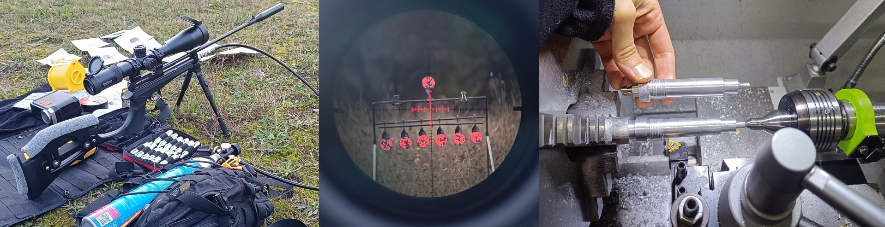

- Less flexible hose with straight ends (I bought "Straight 52inch") Link to Aliexpress
- You also need one female quick connect fitting with internal 1/8NPT thread (item name: "QD(F1-8NPT)") and replace it at hose end.
You can also buy double ended quick connect connector (item name: "Both End QD") Link to Aliexpress - In photo helow you can see hose with quick connector at both ends.
I decided to buy second hose, more flexible with angled end. This is much better choice then previous one. Ignore "T" connector and bleed valve - I use it in my PCP.
- More flexible hose with one angled end (I bought "40 Inch-100CM") Link to Aliexpress
- You also need one female quick connect fitting with internal 1/8NPT thread (item name: "QD(F1-8NPT)") and replace it at hose end.
You can also buy double ended quick connect connector (Item name: "Both End QD") Link to Aliexpress

3. CO2 tank and valve
At the end, you need CO2 tank and valve. I have SodaStream in home, so I bought valve which works with SodaStream tank.
- For my SodaStream tank with Tr21-4 thread I use "2000PSI-QD-Bleed" valve.
Pressure meter is nice to monitor pressure inside tank, but bleed valve is more important.
You use it always before disconnecting the hose, to make it safely. Link to Aliexpress
